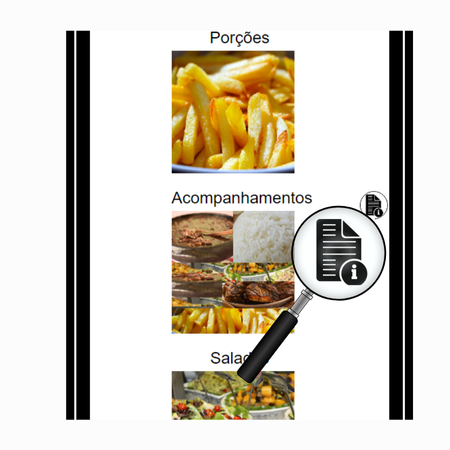
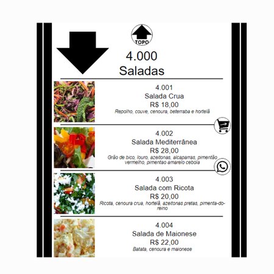
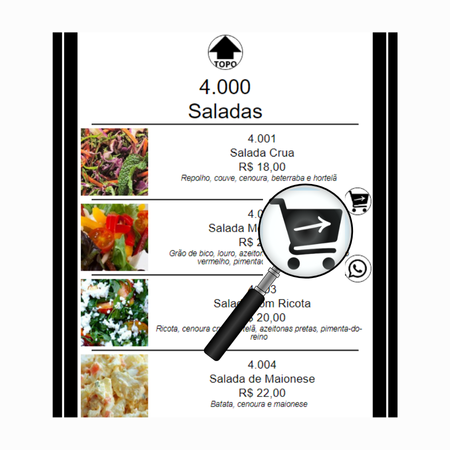
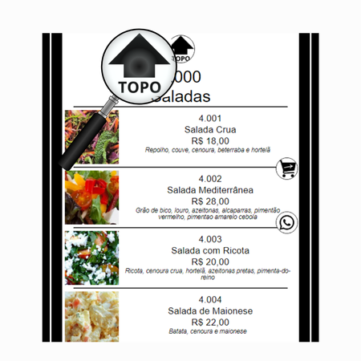
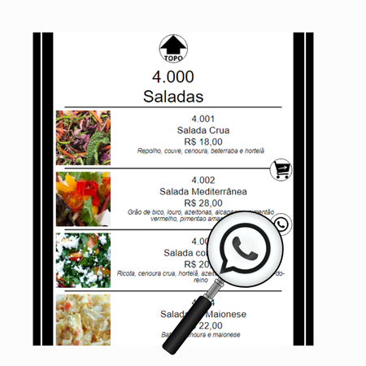

Ícone de informações

O cardápio está dividio em categorias e subcategorias:
Categorias
Categorias

Subcategorias

Toque na imagem da categoria, você será direcionado para as subcategorias.
Toque na imagem do prato escolhido, subcategoria, você será direcionado para Whatsapp, envie o pedido, retorne ao cardápio e envie quantos pedidos desejar.
IMPORTANTE
Para finalizar, toque no ícone em destaque, você será direcionado para o Whatsapp, envie a mensagem de "Pedido Finalizado" para que seu pedido seja processado.
Para finalizar, toque no ícone em destaque, você será direcionado para o Whatsapp, envie a mensagem de "Pedido Finalizado" para que seu pedido seja processado.

Para retornar as categorias, toque no ícone em destaque.

Para entrar em contato, toque no ícone em destaque.
